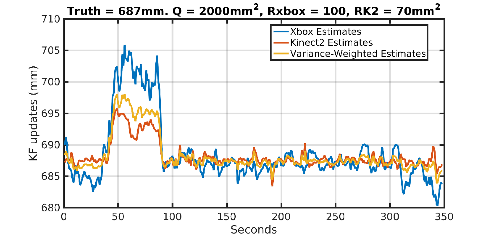

A 3-DoF Neuro-Adaptive Patient Pose Correcting System for Frameless and Maskless Cancer Radiotherapy
Towards Precise Patient Positioning during Head and Neck Cancer Radiotherapy
Background
Head and neck (H&N) cancers are among the most fatal of major cancers in the United States
2014: 35% of all pharynx and oral cavity cancers developed led to fatility [Siegal, R. et. al]
Cancer kills almost 600,000 people each year in the U.S. alone.
Source: NVIDIA Foundation Award.
Background
Radiation-based Treatment Procedures
|
|
|
|
The case for accurate patient positioning
- Modern irradiation procedures allow dose errors of a few millimeters
- This informs computer calculation of highly precise radiation treatment plans on static planning images
- But static CT scans are unrealistic during real-time patient treatment
- How to minimize/eliminate interfractional variations in treatment between different sessions?
Related Works
What it entails
Accurate markers are placed inside a patient's body after consultation with a medic
Few days afterwards, a radiation-based scan (CT) of the markers is performed to localize the exact position of the markers in the gland
The scan provides the size and shape of the cancer cells for computerized treatment planning calculations
Current IGRT radiation-based systems include
[Jennifer De Los Santos et.al., 2012]
-
Electronic Portal imaging detectors
e.g. IGRT and MV imaging; 1 - 2 mm accuracy; does not acquire 3D volumetric info - Cone-beam CT retractable conventional x-ray tube and amorphous silicon x-ray detectors mounted either orthogonal to the treatment beam axis; used in lung/throat/liver, brain, head and neck cancer
- Fan-beam CT in-room gantry-moving CT linac system to move across the patient instead of couch moving patient into the scanner as in conventional CT designs
-
Stereoscopic imaging
used in CyberKnife; 2D imaging system; accuracy < 1mm -
Combination alignment systems: optical imaging and 2-D kV orthogonal imaging
Facilitates localization of rigid and mobile targets which may be volumetrically aligned with CBCT
Related Work
- Frameless and Maskless Cranial SRS [Cervino et. al. 2010]
- Idea was to verify accuracy of IGRT systems without rigid frames on face
- Employed deformable masks of the following sort:

Pros
-
Anthropomorphic head phantoms employed in checking the accuracy of a 3D surface imaging system (AlignRT Vision System)
-
Compared results from an infra-red optical tracking system with the AlignRT vision software system
-
For different couch angles, the difference between phantom positions recorded by the two systems were within 1mm displacement and 1° rotation
-
Patient motion due to couch motion was less than 0.2mm
Cons
-
6DOF positioning systems model the human body rigidly
-
No accounting for flexibility/curvature of the neck
-
Limited positioning of patient can reduce effectiveness
-
Patient motion due to couch motion was less than 0.2mm
-
If patient moves, therapy must be stopped, patient repositioned, costs time and money
Overview
Demonstrate optimal control of the 1-DOF intra-cranial control of patient motion during H&N Cancer RT
Testbed consists of a Mannequin head with a neck/torso motion simulator lying in a supine position on an inflatable air bladder (IAB)
System includes two two-port SMC Pnematics Co. proportional valves, to actuate bladder
Two different Kinect RGB-D cameras measure the patient's position in real-time
Work builds upon our earlier results from the initial iunvestigation
System Set-up

System Set-up

Depth Map from the two Kinect Sensors

Face Detection
Local Kalman filters
- Problem: Find the state estimates $\hat{\textbf{x}}(i)$ that minimize the mean-squared error to the true sensors' state $\textbf{x}(i)$, given the observation sequence, $z(1), \cdots, z(j)$
- that is,
\begin{align} \label{eq.est_expt} \hat{\textbf{x}}(i|j)&= \text{arg } \min_{\hat{\textbf{x}}(i|j)\in \mathbb{R}^n} \mathbb{E}\{(\textbf{x}(i) - \hat{\textbf{x}})(\textbf{x}(i) - \hat{\textbf{x}})|z(1), \cdots, z(j)\} \nonumber \\ &\triangleq\mathbb{E}\{\textbf{x}(i)|{z}(1), \cdots, {z}(j)\} \triangleq\mathbb{E}\{\textbf{x}(i)|{Z}^j\} \end{align}
-
The covariance of the estimation error is
\begin{align} \textbf{P}(i|j)\triangleq \mathbb{E}\{(\textbf{x}(i) - \hat{\textbf{x}}(i|j)(\textbf{x}(i) - \hat{\textbf{x}}(i|j)^T | Z^j\}. \end{align}
Sensors Model
Assumptions
- Model of state transition matrix is common to both sensors
- The process noise is unknown
Modeling procedure
- Denote $\textbf{x}(k)=[d(k),\,\dot{d}(k)]^T \in \mathbb{R}^2$ as the state vector of interest; where $d(k)$ represents the distance from the sensor's origin to the head of the mannequin
- And let $\Delta T $ be the time between steps $k-1$ and $k$.
Modeling procedure
-
The model state update equations are thus
\begin{equation}
\textbf{x}_k = \textbf{F}_k\textbf{x}_{k-1}+\textbf{B}_k\textbf{u}_k+\textbf{G}_k\textbf{w}_k
\label{eq:state_model}
\end{equation}
where $\textbf{F}(k) \in \mathbb{R}^{2\times 2}$ is the state transition matrix given by \begin{equation} \textbf{F} = \begin{bmatrix} 1 & \Delta T \\ 0 & 1 \end{bmatrix} \end{equation}
$\textbf{u}(k) \in \mathbb{R}^2$ is the control input,
$\textbf{B}(k)$ is the control input matrix that maps inputs to system states,
$\textbf{G}(k) \in \mathbb{R}^{ 2 \times 2}$ is the process noise matrix, and $\textbf{w}(k) \in \mathbb{R}^2$ is a random variable that models the state uncertainty.
Modeling Procedure
-
In our model, $u(k)$ = 0. Therefore the model evaluates to
\begin{align}\label{eq.accelmodel} \textbf{x}_k = \textbf{F}_k \textbf{x}_{k-1}+ \textbf{G}_k \textbf{w}_k \end{align}
-
We set $\textbf{G}_k$ to identity and set $\textbf{w}(k) \sim \mathcal{N}(0, \textbf{Q}(k))$,
-
And set the covariance matrix $\textbf{Q}(k)$ set to a random walk sequence defined by $\textbf{W}_k={[\frac{{\Delta T}^2}{2}, \Delta T ]}^T$
- Therefore, \begin{align} \textbf{Q} &= \textbf{W}\textbf{W}^T{\sigma_a}^2 = \begin{bmatrix} \dfrac{{\Delta T}^4}{4} & \dfrac{{\Delta T}^3}{2} \\ \dfrac{{\Delta T}^3}{2} & {\Delta T}^2 \end{bmatrix}{\sigma_a}^2. \end{align}
where $ \textbf{w}_k$ is the effect of an unknown input causing an acceleration $a_k$ in the head position and $ \textbf{G}_k$ applies that effect to the state vector, $ \textbf{x}_k$
Modeling Procedure
-
We transform kinect1's observations, $z_1(k)$, into kinect2's observation, $z_2(k)$, using the relation
\begin{equation}\label{eq:sensors_obs} {z}_s= \textbf{H}_s(k)\textbf{x}(k)+{v}_s(k) \qquad \qquad s = 1,2 \end{equation}
-
The linear Kalman filter prediction and update phases are computed at every time step based on
where $\textbf{H}_s(k) ={\begin{bmatrix} 1 & 0 \end{bmatrix} }^T$ maps the system's state space into the observed space, and ${v}_s(k) \in \mathbb{R}$ is a random variable that models the sensors' error. We define ${v}_s(k)$ as a normally distributed random variable with zero mean and variance $\sigma_{rs}^2$.
The random sequences $v_s(k)$ are assumed to be independednt and uncorrelated in time.
Modeling Procedure
Kalman Filter Equations |
|||
|---|---|---|---|
| Prediction Phase | Update Phase | ||
|
\begin{align}\label{eq:predict} \hat{\textbf{x}}_{k|k-1}&=\textbf{F}\hat{\textbf{x}}_{k-1|k-1} + \textbf{B}_k\textbf{u}_k \nonumber \\ \textbf{P}_{k|k-1}&=\textbf{F}_k\textbf{P}_{k-1|k-1}{\textbf{F}_k}^T + \textbf{Q}_k \end{align} |
\begin{align} \label{eq:update} \textbf{K}_k &= \textbf{P}_{k|k-1}{ \textbf{H}_k}^T{[ \textbf{H}_k \textbf{P}_{k|k-1}{ \textbf{H}_k}^T+ \textbf{R}_k]}^{-1} \nonumber \\ \hat{ \textbf{x}}_{k|k}&=\hat{ \textbf{x}}_{k|k-1} + \textbf{K}_k ( \textbf{z}_k - \textbf{H}_k \hat{ \textbf{x}}_{k|k-1}) %\tilde{y}_k \nonumber \\ \textbf{P}_{k|k}&=( \textbf{I} - \textbf{K}_k \textbf{H}_k) \textbf{P}_{k|k-1} \end{align} |
||
where $\hat{ \textbf{x}}_{k|k-1}$ and $ \textbf{P}_{k|k-1}$ are the state prediction vector and the prediction covariance matrix respectively, and
$ \textbf{K}_k$, $\hat{ \textbf{x}}_{k|k}$, and $ \textbf{P}_{k|k}$ are respectively the KF gain, posteriori state estimate and its state covariance matrix.
Through exploration process model kinematics, and exploitation of the physics both sensors, we found the following values to successfully model the variance of the process noise and local KF signal noise:
Modeling Procedure
Variance of local KFs |
|||
|---|---|---|---|
| Kinect1 | Kinect2 | ||
|
\begin{align} {\sigma_{r1}}^2 &= 70mm^2 \\ \sigma_a &= 2000 mm^2; \end{align} |
\begin{align} {\sigma_{r2}}^2 &= 60mm^2 \\ \sigma_a &= 2000 mm^2; \end{align} |
||
Local KF Filtering Results
- The steady-state performance of both sensors include a reduction in the variance of the observation sequence from Kinect 1 by $80.81\%$, while the Kinect 2 shows an improvement in noise rejection by almost $60\%$ .
Data Fusion
- The estimates (predictions) obtained in the foregoing are passed through Linux FIFO pipes to a central site for fusion
-
At the central site, the predictions $\hat{\textbf{x}}_{F}(k|k)$ are combined according to
\begin{align} \hat{\textbf{x}}_{F}(k|k) &= \textbf{P}_{F}(k|k)\sum\limits_{i=1}^{N}\left[{\textbf{P}_s}^{-1}(k|k)\hat{\textbf{x}}_s(k|k)\right] \nonumber \\ \text{where } \textbf{P}_{F}(k|k) &= \left[\sum\limits_{i=1}^{N} {\textbf{P}_s}^{-1}(k|k)\right]^{-1}. \end{align}
- Note: We assume a state model common to both sensors and adopt a variance-weighted average of each local track in the global track fusion algorithm
Fusion Results
Fusion Take-aways.
- The fusion of the local tracks produces better estimates, with improved signal to noise ratio.
- The fused estimate assigns more weight to the less noisy signal from Kinect 2.
- We demonstrate improved accuracy of the effective signal to be used in our control algorithm to no more than a standard deviation of 0.75mm from the true position of an object.
- The noise spikes in the fused tracks when the process state estimates are yet to converge can be attributed to the noisy initialization of pixels in the sensors before they attain their steady state values.
Identification and Control
- Collect lagged input-output data $Z^N = \{u(1) \cdots u(N) \quad y(1) \cdots y(N)\}$ offline; then determine best model from a set of candidate model sets
- where $y_i$ is the fused track estimate and $u_i$ = current to the pneumatic valve
- Let the model structure be a differentiable mapping from a connected, compact subset $\mathcal{D}_{\mathfrak{M}}$ of $\mathcal{R}^d$ to a model set $\mathfrak{M}^*$, such that the gradients of the predictor functions are stable
- Therefore, we can model external disturbances/stochastic variables as additive white noise sequence ...
Identification procedure
- such that we obtain a stochastic state space sequence of the form:
- \begin{align} \label{eq:sysid_stochss} \mathbf{x}(k+1) = \mathbf{A x} (k) + \mathbf{B u}(k) + \mathbf{w}(k) \nonumber \\ \mathbf{y}(k) = \mathbf{Cx}(k) + \mathbf{Du}(k) + \mathbf{v}(k) \end{align}
- $\mathbf{w}(k) \text{ and } \mathbf{v}(k)$ compensate for system disturbances and model uncertainties
- We estimate the states $\mathbf{x}(k)$ and from measurable units $u$ and $y$ such that we end up with a linear regression problem
- This can be written as \begin{align} \label{eq:sys_idstate_minimal} Y(k) = \Theta \Phi(k) + E(k) \end{align}
-
where
\[ Y(k) = \left[ \begin{array}{c}
\mathbf{x}(k+1) \\
\mathbf{y}(k)
\end{array} \right],
%
\hspace{0.3em}
%
\Theta= \left[ \begin{array}{cc}
\mathbf{A} & \mathbf{B} \\
\mathbf{C} & \mathbf{D}
\end{array}\right]
\]
\[\Phi(k) = \left[\begin{array}{c}
\mathbf{x}(k) \\ \mathbf{u}(k)
\end{array} \right] \hspace{0.2em} \text{ and }
%
{E}(k) = \left[ \begin{array}{c}
\mathbb{E}(w(k)) \\
\mathbb{E}(v(k))
\end{array}\right].
\]
- Assumption: Noise model is white $\rightarrow$ unbiased model
- Therefore, estimate $\mathbf{A}, \mathbf{B}, \mathbf{C}, \text{ and } \mathbf{D}$ matrices by the linear least squares regression
- Estimate $\mathbb{E}(\mathbf{w}(k))$ and $\mathbb{E}(\mathbf{v}(k))$ as a sampled sum of squared errors of the residuals
Parameter Estimation
- Xtize $u(k)$ and $y(k)$ as a linear difference equation of the form
- The above equation can be translated to an ARMAX model of the form
- $ G(q, \theta)$ represents the transfer function from input to output predictions, and $H(q, \theta)$ denotes the transfer function of prediction errors to the output model, $\hat{y}(k)$
\begin{eqnarray}\label{eq:lineardiff} y(k) &=-a_1y(k-1)-\cdots-a_{n_a}y(k-n_a) \nonumber \\ & -b_1u(k-1) - \cdots -b_{n_b}u(k-n_b) -e(k) \nonumber \\ &-c_1e(k-1) -c_{n_c}e(k-n_c) \end{eqnarray}
\begin{align}\label{eq:sysid_TF} \hat{y}(k) &= G(q, \theta)u(k) + H(q, \theta)\hat{e}(k) \\ \text{with} \quad G(q, \theta) &= \dfrac{B(q)}{A(q)},\text{ } H(q, \theta) = \dfrac{C(q)}{A(q)} \nonumber \end{align}
- $A(q)$, $B(q)$, and $C(q)$ are polynomials defined as \begin{align}\label{eq:sysid_ABC} A(q) &= 1 + a_1 q^{-1} + \cdots + a_{n_a}q^{-n_a} , \nonumber \\ B(q) &= b_1q^{-1}+ \cdots + b_{n_b}q^{n_b}, \nonumber \\ C(q) &= 1 + c_1 q^{-1} + \cdots + c_{n_c}q^{-n_c} \end{align}
- The estimation problem is to predict the estimates, $\hat{y}(k|\theta)$ so that the errors, $\varepsilon(t,\theta) = \parallel y(t) - \hat{y}(t|\theta) \parallel_p$ are minimized by the choice of an appropriate p-norm criterion function
Export to PDF
Presentations can be exported to PDF, here's an example: